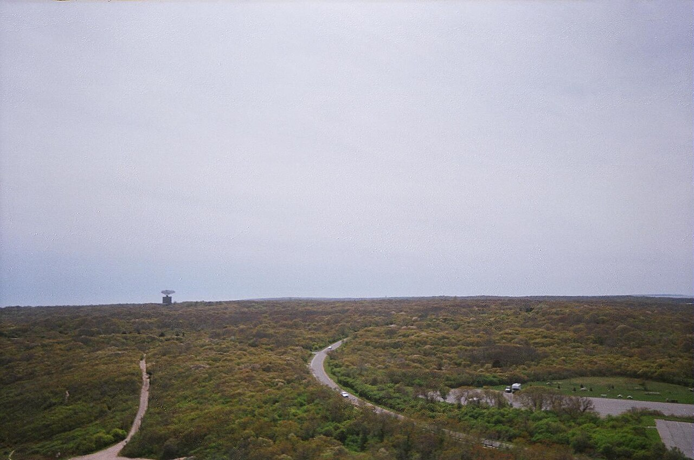

Camp Hero State Park
前军事基地改建的 415 英亩公园，有全美仅存的 AN/FPS-35 巨型雷达塔；蒙托克最高悬崖，海景极佳。
首页 / 州立公园 / 坎普希罗州立公园

前军事基地改建的 415 英亩公园，有全美仅存的 AN/FPS-35 巨型雷达塔；蒙托克最高悬崖，海景极佳；也是 Netflix《怪奇物语》灵感来源地之一。
徒步、骑行、骑马、海钓（24 小时，须许可）、野餐、观鸟。
参观二战炮台与冷战雷达塔遗址。